分析值与平台值
近 1 天、7 天、30 天销量根据评论样本计算，可能与实际成交量不同。平台累计销量沿用平台展示口径。
从商品链接建立首份记录
从一条商品链接开始，保存数据，查看价格、销量和库存变化。
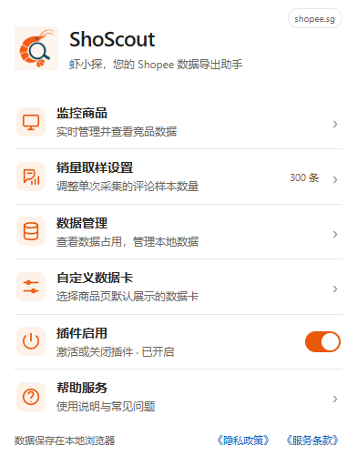
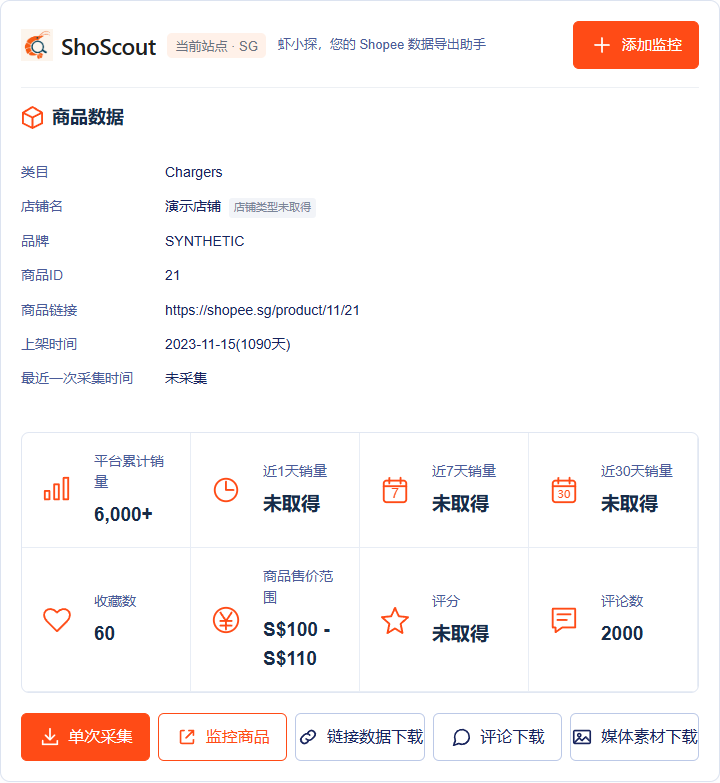
集中管理商品与采集记录
点击监控商品打开列表。搜索商品、店铺、品牌、备注或链接；右侧可筛选销量状态、监控状态和站点。
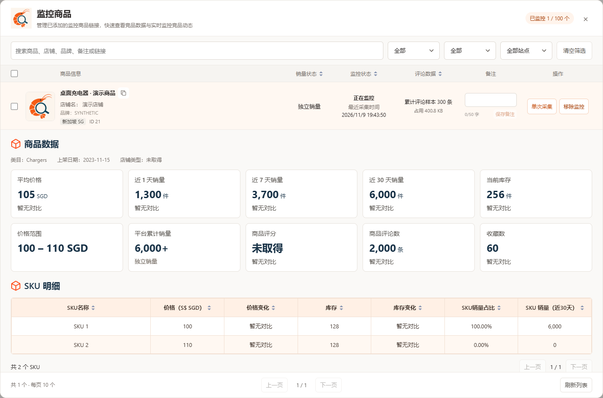
输入备注后点击保存备注。销量状态区分独立销量与聚合销量，具体含义见常见问题。
对比价格、销量与库存变化
切换价格、销量、库存和 7 天 / 30 天。点击下方 SKU 名称查看对应曲线，再次点击返回总览；将鼠标移到数据点查看日期和数值。
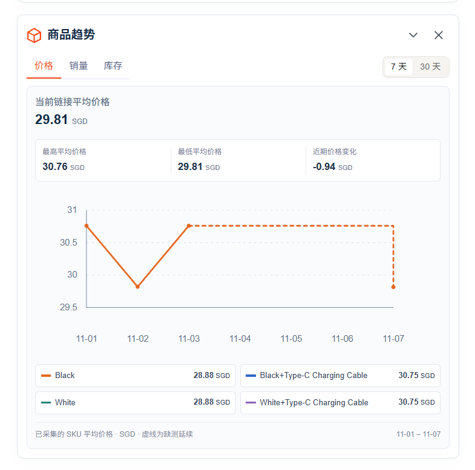
“未取得”表示暂无可用数据，不等于 0；“暂无对比”表示缺少可比较的历史记录。
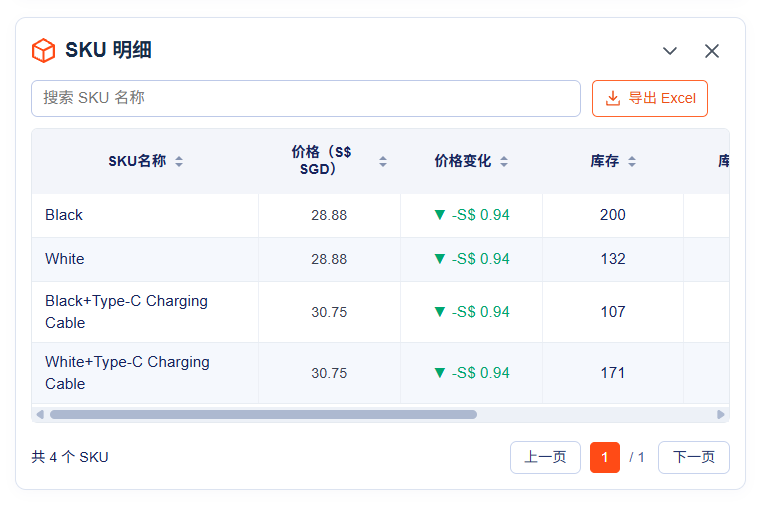
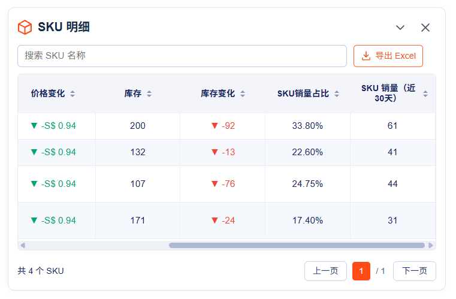
保存商品表格与图片视频
点击链接数据下载或 SKU 明细中的导出 Excel，保存当前可用的商品和规格数据。
选择评论范围和导出内容，点击下载评论保存为 Excel（.xlsx）表格。选择评论文本+媒体文件时，表格包含图片预览和图片、视频链接。全部评论单次最多读取 5000 条。
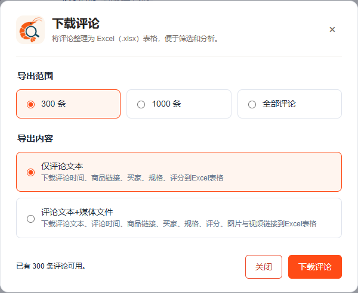
使用底部的下载商品主图、下载 SKU 图片、下载详情图或下载视频，一键下载某一类素材；点击右上角全部下载保存所有可用素材。
只需要部分素材时，勾选后点击下载所选。点击图片右下角的放大镜查看大图，再次点击任意位置关闭。
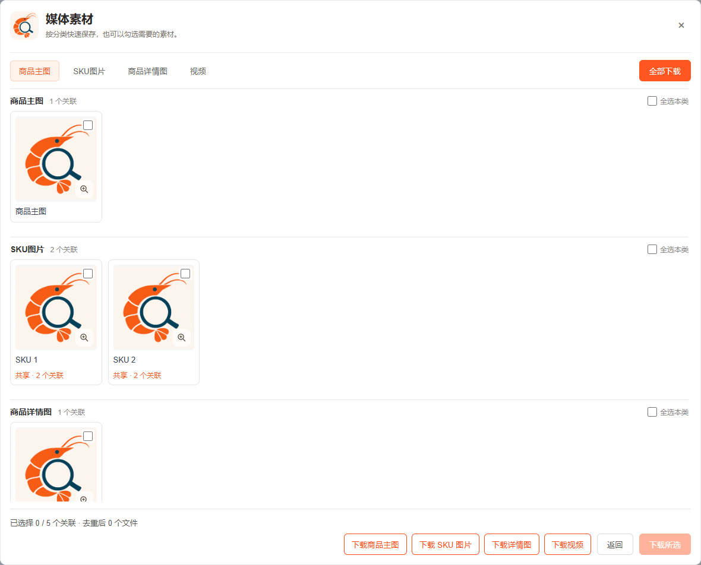
调整评论取样与卡片显示
300 条适合快速查看，1000 条读取更多评论；动态取样目标为 500–2000 条，可用评论不足时读取可取得的样本。保存后用于下一次采集。
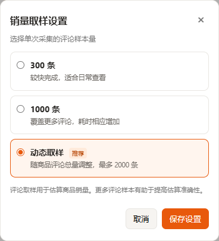
选择商品页默认显示的卡片。隐藏卡片不会删除数据；卡片上的关闭按钮仅关闭当前显示。
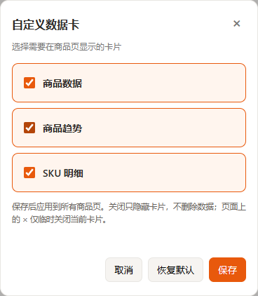
近 1 天、7 天、30 天销量根据评论样本计算，可能与实际成交量不同。平台累计销量沿用平台展示口径。
“未取得”表示暂无可用数据。已确认无关联评论样本的 SKU 按 0 显示，具体说明见下方常见问题。
业务记录保存在当前浏览器。在数据管理中查看图片、评论和其他数据占用；电脑上已下载的文件不计入这里。
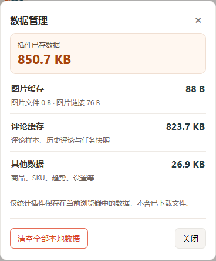
确认后会清理可归属该商品的监控、评论、SKU、趋势和素材清单等本地业务数据，无法撤销。设置、共享历史和已下载文件不会因此全部清空。
在数据管理中点击“清空全部本地数据”，确认后会停止正在进行的采集与下载，删除全部本地记录并恢复默认设置。请先导出需要保留的资料，此操作无法恢复，已下载文件仍保留在电脑中。
当前插件免费开放。无需注册账号即可使用，最多监控 100 个商品。Shopee 页面需要自行登录与手动验证。
当前通过单次采集更新数据。加入监控用于保存和比较商品，批量采集与自动更新功能暂不支持。
同一站点、店铺与商品按同一个监控商品识别。不要同时重复点击采集；等待当前任务完成即可。
添加监控和完成采集是两个步骤。打开商品后执行单次采集，查看进度卡是否成功完成。
不会。失效链接表示页面已确认商品不存在或已删除；网络、验证或临时读取失败不等于商品失效。
不会，这个开关只控制商品页里挂载的卡片。重新开启后可继续查看已有数据。
请保留正在执行任务的商品页，等待进度卡完成。关闭或跳转页面可能中断读取。
销量取样用于计算当前商品近 1 天、7 天、30 天的销量，通过评论样本分布计算商品的历史销量趋势。取样设置决定下一次采集读取的评论样本数量。
这两个标签说明 Shopee 平台累计销量的统计口径。“独立销量”对应当前商品；“聚合销量”是平台合并展示的销量，不能全部视为当前商品的成交量。近 1 天、7 天、30 天销量则根据评论样本计算。
有效数据会保留。先查看进度卡中的具体原因，处理登录、验证或网络问题后再采集，不必清空已有记录。
销量采集按取样设置读取评论，并非全部评论。完整评论需单独下载；平台可读取范围、重复记录和页面展示口径也可能影响数量。
不一定。已确认没有关联评论样本的 SKU，销量占比和近 30 天销量按 0 显示；这是当前分析结果，不代表平台真实订单为零。读取失败或数据不可用仍显示未取得。
趋势依赖已经保存的采集记录。首次采集或缺少可比较的历史记录时，无法展示完整变化；后续采集会逐步积累数据。
不会。需要时打开媒体素材下载窗口，使用分类快捷下载或全部下载，也可以勾选需要的素材后下载。
使用评论下载，并选择需要的范围与内容。全部评论单次最多读取 5000 条，实际数量以可取得的结果为准；它与销量取样设置相互独立。
窗口关闭或离开页面后，临时下载资料会释放。需要继续时重新打开下载窗口；已经保存到电脑的文件不会被删除。
不会。自定义数据卡只调整默认显示；卡片上的关闭按钮仅关闭当前显示。
目前记录保存在本地浏览器，不提供跨设备自动同步。可导出需要保留的资料；导出文件不等于可恢复整个扩展的完整备份。
不能。确认后会清理可归属该商品的本地业务数据，请先导出需要的资料；设置、共享历史和已下载文件不会因此全部清空。
发送前检查资料，请勿提供密码、验证码或登录凭据。